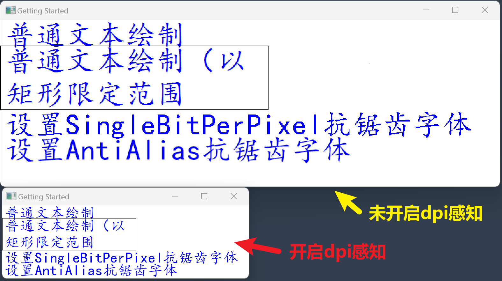

首次编辑：2024/7/22/13:55
最后编辑：2024/7/22/
写Windows应用程序的时候，经常会出现图形、字体边角很多锯齿的现象。
这种现象可能是因为没有开启抗锯齿，于是开启了抗锯齿。但发现开启了抗锯齿之后，还是存在很多肉眼可见的锯齿，特别是对于字体。
于是后来才知道dpi（dot per inch，每英寸点数）这个概念，可以简单地理解为显示器的分辨率。也就是说dpi只跟显示器相关，跟电脑的操作系统、软件、甚至是写软件所使用的语言都没有关系。
所以当我们写一个图形应用程序的时候，我们为图形指定了尺寸大小，但那些也都只是逻辑上的单位，程序并不知道显示器的分辨率。
既然程序不知道显示器的分辨率，那么程序执行之后如何知道要绘制的图形具体要多大呢，这背后就是操作系统在进行暗箱操作了。在程序运行时，操作系统和图形库可能会根据显示器的DPI设置来调整图形的渲染和显示效果。
然而这种调整可能是我们不想要的，因为缩放往往会降低图像的质量，于是才会出现一些令人讨厌的锯齿。
为了不让操作系统对我们所设置的图形进行缩放，我们可以把我们的程序标记为“具有dpi感知能力”的，这样操作系统就不会对程序显示的图形进行缩放了。
这个步骤需要通过一个.manifest文件（本质上是一个.xml格式的配置文件）来实现。
首先新建一个dpi_aware.manifest文件，内容如下：
<!-- dpi_aware.manifest -->
<assembly xmlns="urn:schemas-microsoft-com:asm.v1" manifestVersion="1.0" xmlns:asmv3="urn:schemas-microsoft-com:asm.v3" >
<asmv3:application>
<asmv3:windowsSettings xmlns="http://schemas.microsoft.com/SMI/2005/WindowsSettings">
<dpiAware>true</dpiAware>
</asmv3:windowsSettings>
</asmv3:application>
</assembly>
接着再新建一个manifest.rc文件，内容如下：
1 24 "disable_dpi_scaling.manifest"
其中1表示资源id，24表示这是个.manifest文件，最后就是文件的路径。
然后使用mingw windres进行编译：
windres manifest.rc -o manifest.o -O coff --use-temp-file
然后再编译源程序的时候，把这个生成的manifest.o也一起链接上即可：
gcc main.c manifest.o -o main.exe -mwindows -luser32 -lkernel32 -lgdi32 -municode -Wl,--subsystem,windows

可以看到没有开启dpi感知的时候，整个应用程序的窗口都被放大了，里面的字体也被放得很大，开启了抗锯齿的字体会显得有些模糊，而没有开启抗锯齿的字体则可以直接看出字体周围的像素点。